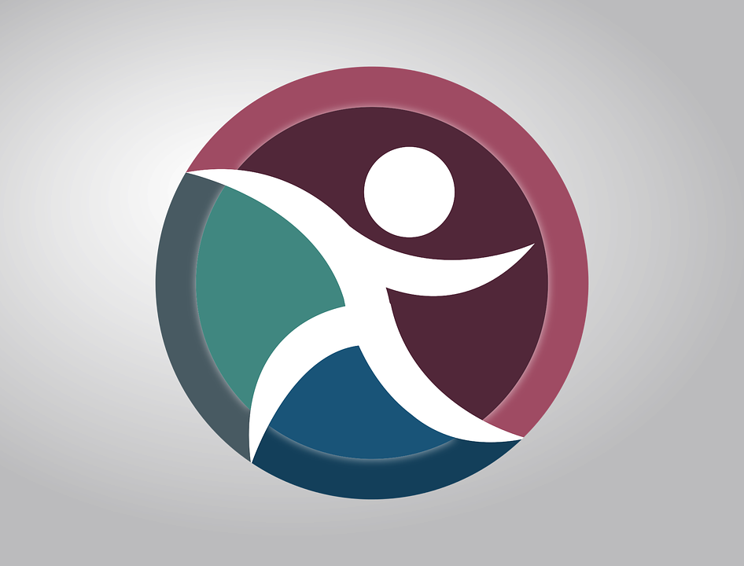

¿Qué es el deporte?
El Deporte es una actividad reglamentada, normalmente de carácter competitivo, que puede mejorar la condición física de quien lo practica, y además tiene propiedades que lo diferencian del juego.
La Real Academia Española, en su Diccionario de la lengua española, define deporte como una actividad física, ejercida como juego o competición, cuya práctica supone entrenamiento y sujeción a normas; también, en una segunda acepción, más amplia, como recreación, pasatiempo, placer, diversión o ejercicio físico, por lo común al aire libre. Por otra parte, la Carta Europea del deporte lo define como: Todas las formas de actividades físicas que mediante una participación organizada o no, tienen como objetivo la expresión o la mejora de la condición física y psíquica, el desarrollo de las relaciones sociales o la obtención de resultados en competición de todos los niveles.
Así mismo, de acuerdo con el Comité Olímpico Internacional, la práctica del deporte es un Derecho Humano, y uno de los principios fundamentales del Olimpismo es que toda persona debe tener la posibilidad de practicar deporte sin discriminación de ningún tipo y dentro del espíritu olímpico, que exige comprensión mutua, solidaridad y espíritu de amistad y de juego limpio.
El clima motivacional hacia el deporte como factor psicosocial y la adherencia a la dieta mediterránea como factor saludable son clave en la práctica deportiva y en la docencia de la educación física, pues determinadas orientaciones podrán construir estilos de vida más saludables.